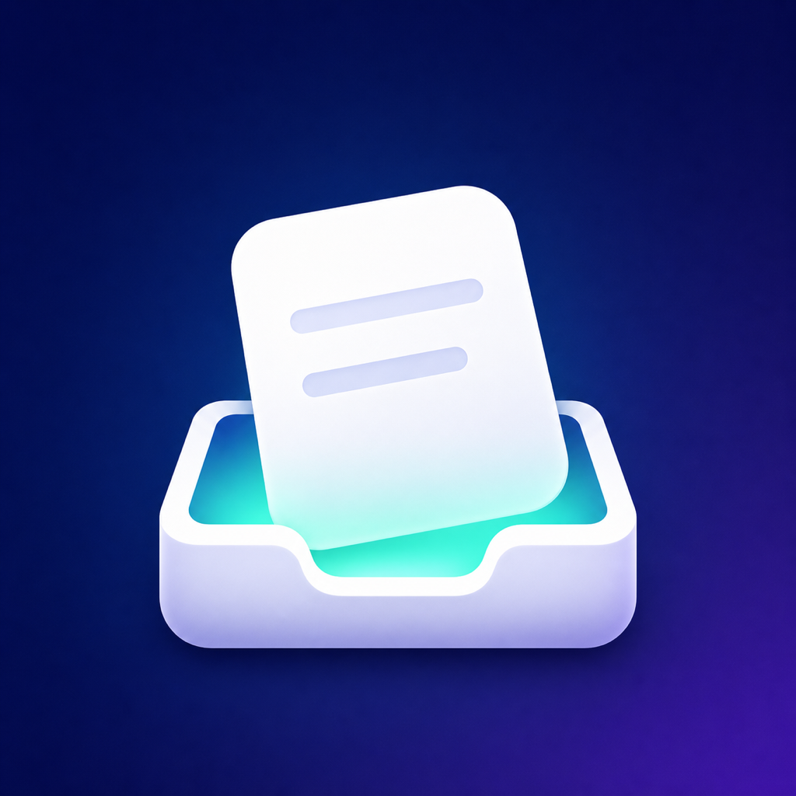

Hoja de compartir del sistema
Guarda texto y enlaces desde Safari, Notas, apps sociales y otras apps compatibles con compartir.

CarryOverGuarda ahora, vuelve después
CarryOver es una red confiable para enlaces, texto e ideas que encuentras al navegar. Guarda desde cualquier app y vuelve cuando estés listo para pensar, verificar o actuar.
Guarda texto y enlaces desde Safari, Notas, apps sociales y otras apps compatibles con compartir.
CarryOver encuentra URL dentro del texto compartido y conserva el contexto original.
Los elementos guardados se sincronizan con CloudKit para mantener iPhone, iPad y Mac al día.
Revisa nuevas capturas en una cola clara en lugar de dejarlas dispersas entre apps.
Archiva elementos tratados y conserva lo que ya revisaste.
Mantén visibles las pistas importantes para retomarlas después.